PROFINET Device4.0.3 |
 |

|
PROFINET Device4.0.3 |
|
|
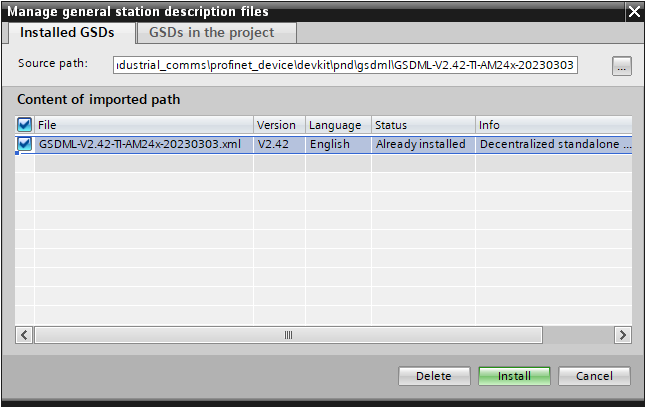
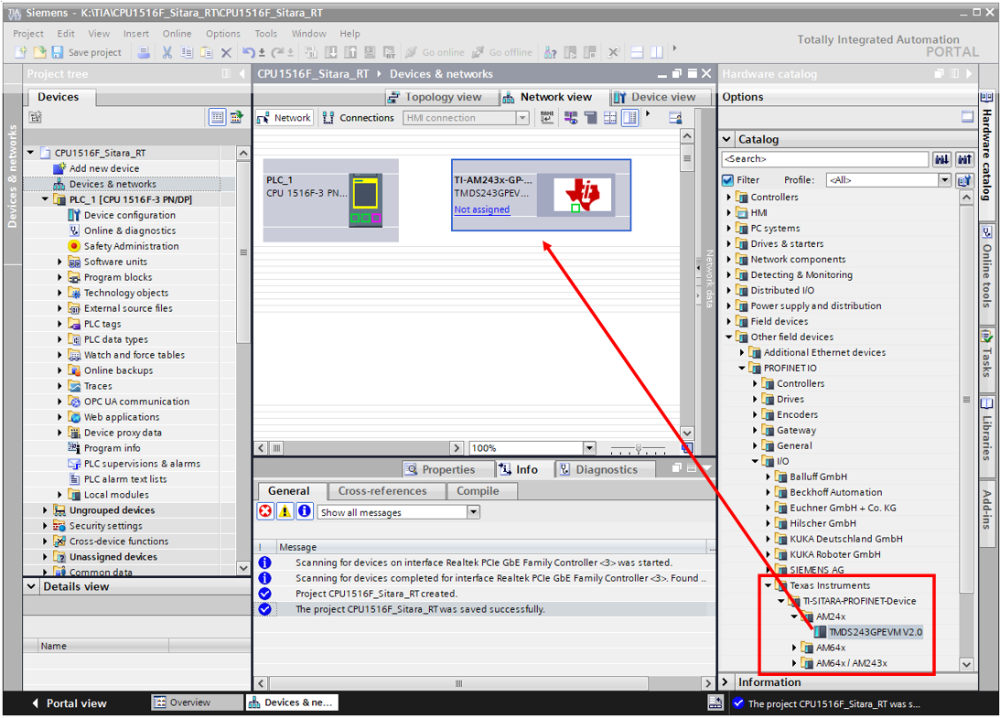
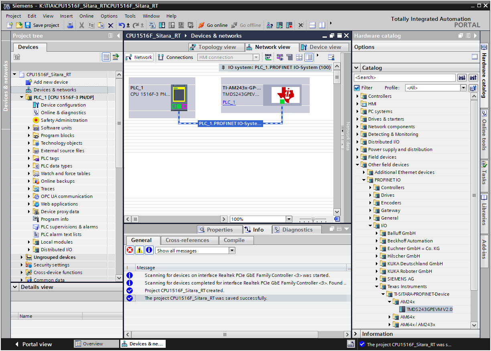
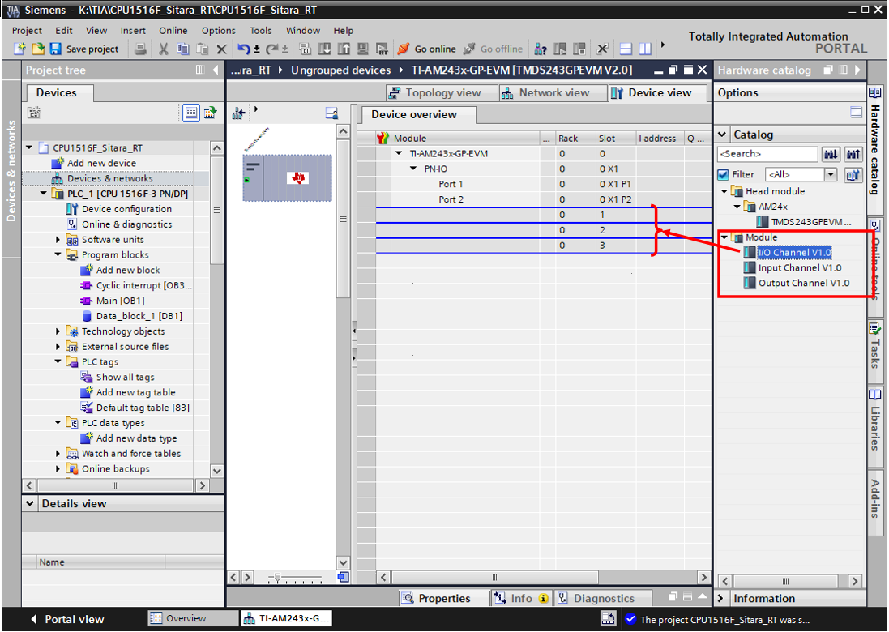
Following table shows the allocation of slots:
| Slot No | Fixed / Dynamic | Allocation |
|---|---|---|
| 0 | Fixed | DAP Device itself |
| 1 | Dynamic | One of Input, Output or I/O Module |
| 2 | Dynamic | One of Input, Output or I/O Module |
| 3 | Dynamic | One of Input, Output or I/O Module |
Following figure shows an expample of Module and Submodule/Telegram selection:
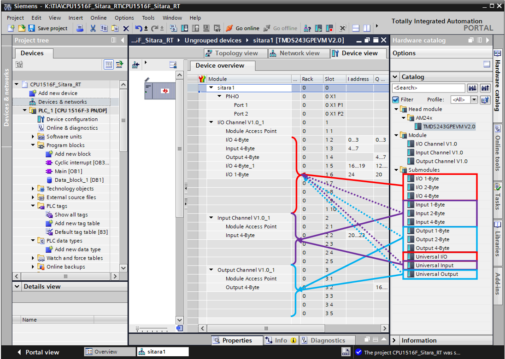
Following figure shows the Submodule Peripheral index definitions in context of total Subslots supported by IO-Device:
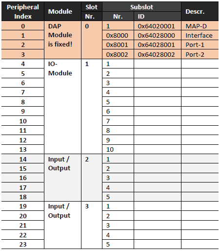
Module Access Point (MAP) is the access point for parametrization over PROFINET A-Cyclically Read / Write services. Easch Module has a virtual submoule which reperesents the module itself and provides Module/Submodule specific parameter. Followinf figures shows the Module/Submodule specific parameter which transfered at connetion phase to the device:
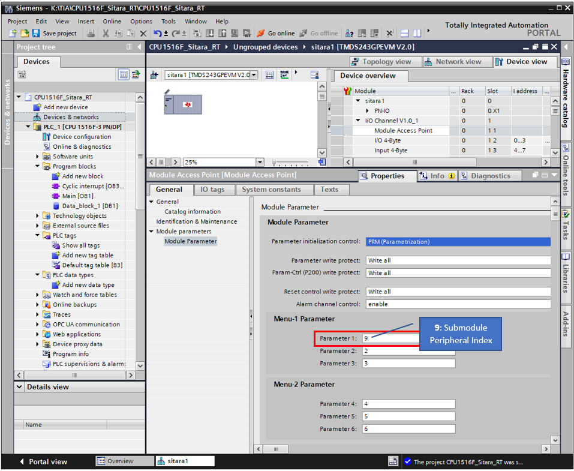
in this example we use an I/O-Submodule with one Byte of Input and Output Data to control and read the status of some LED supported on EVM-Board. Because of dynamically allocation of I/O-Submodule, we've to identify where the Submodule plugged which used for LED control. In this case the index of I/O-Submodule is 9. By the Cyclically Data-Exchange the appliction evaluates the MAP Module parameter to get the Pheripheral index (9) and process the:
Output-Data from PLC and applay the Output-Data which is the Setpoint for LED 
Input-Data by reading the actual status of LED from Hardware and actualizes the Input-Data. 
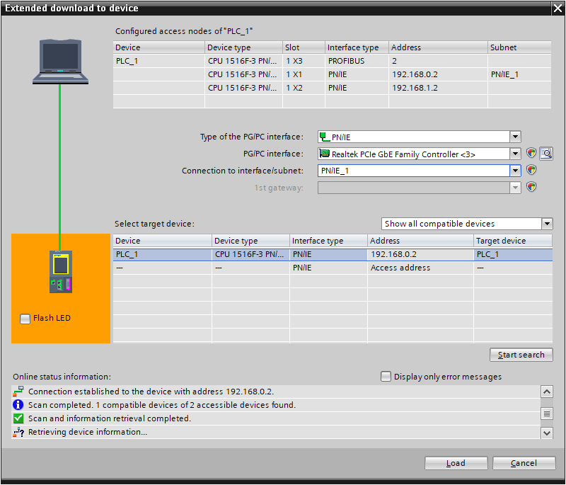
In this example EVM board is asigned with sitara1:
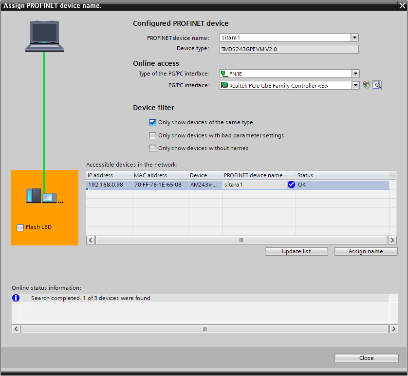
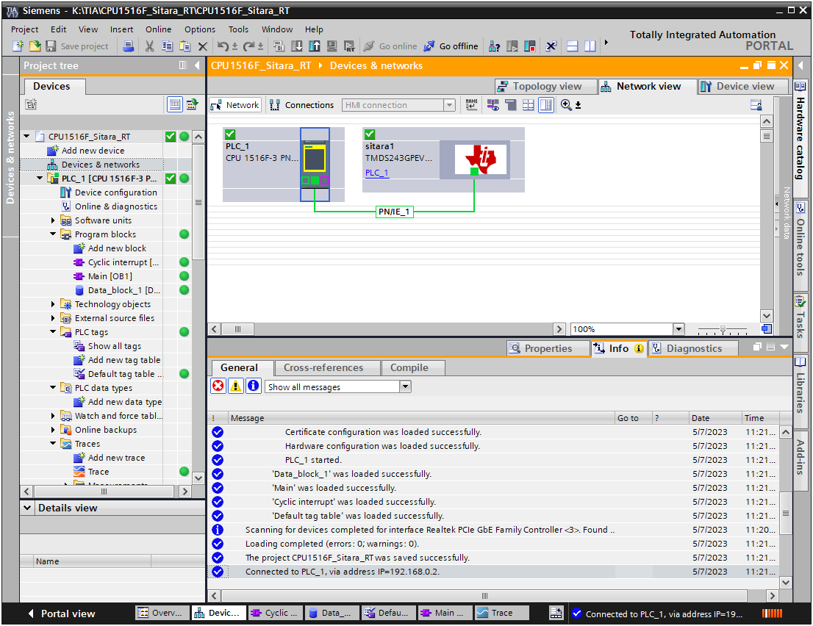
Follwoing figure shows the diagnostic status of EVM board:
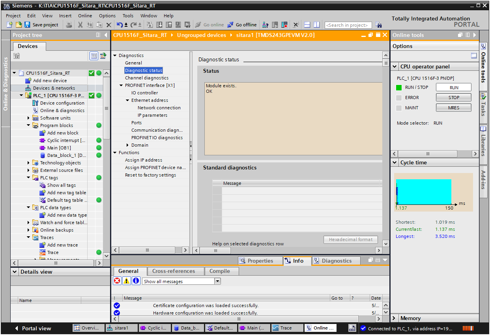
Follwoing figure shows the Line-Delay measured by EVM board:
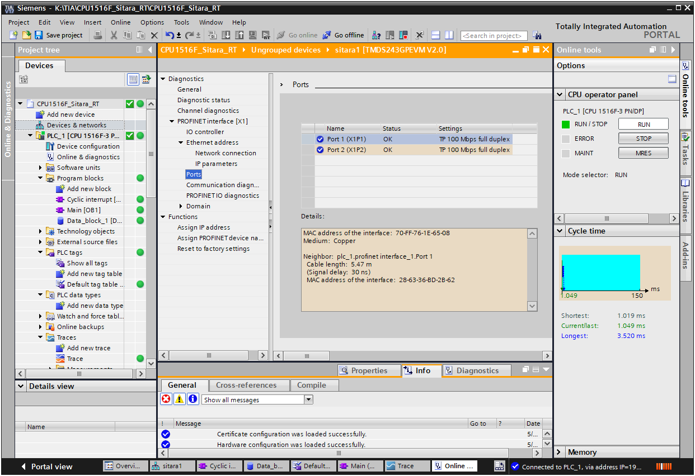
The DCP Blink is available over Accessible devices menu by PLC:
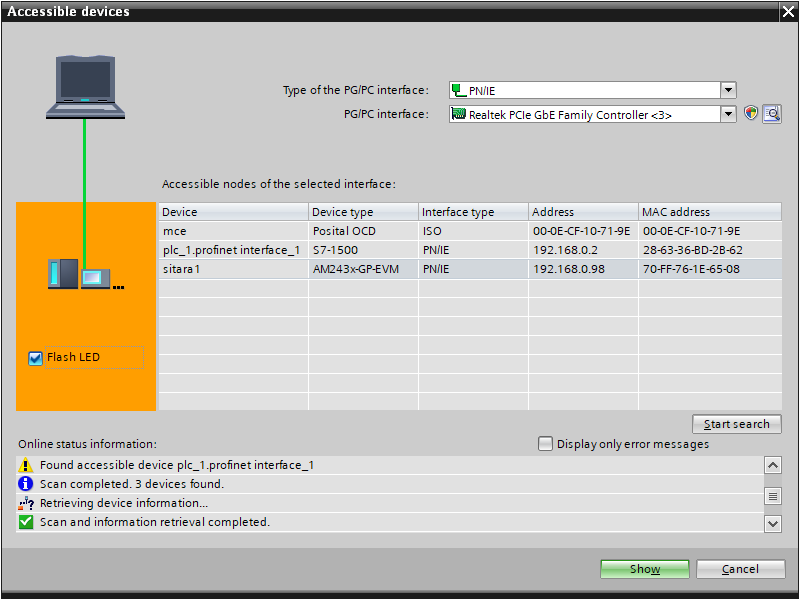
 1.9.8
1.9.8